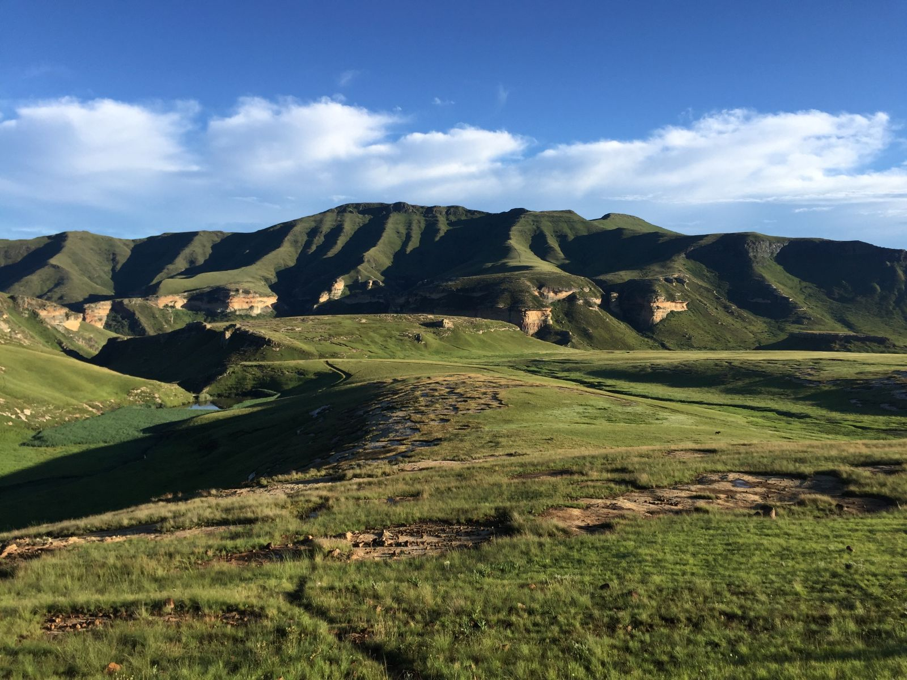
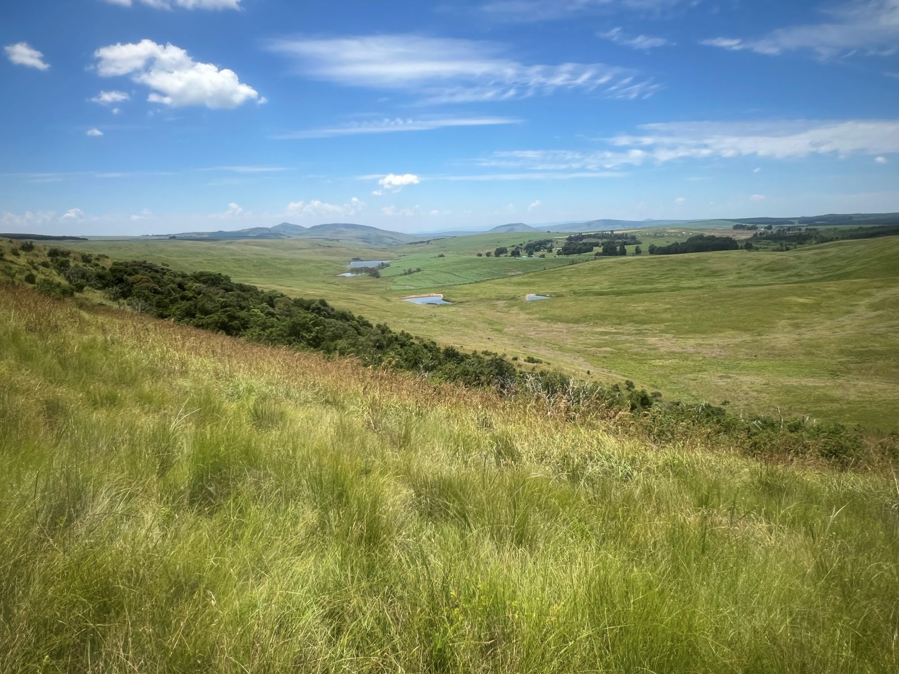
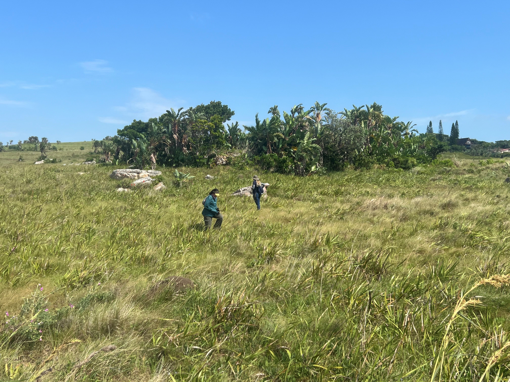
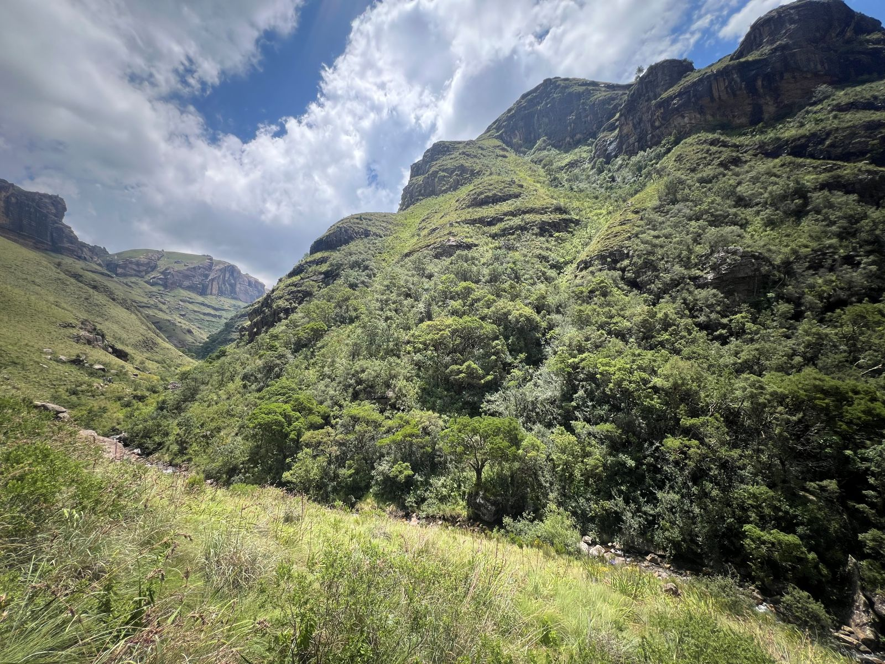
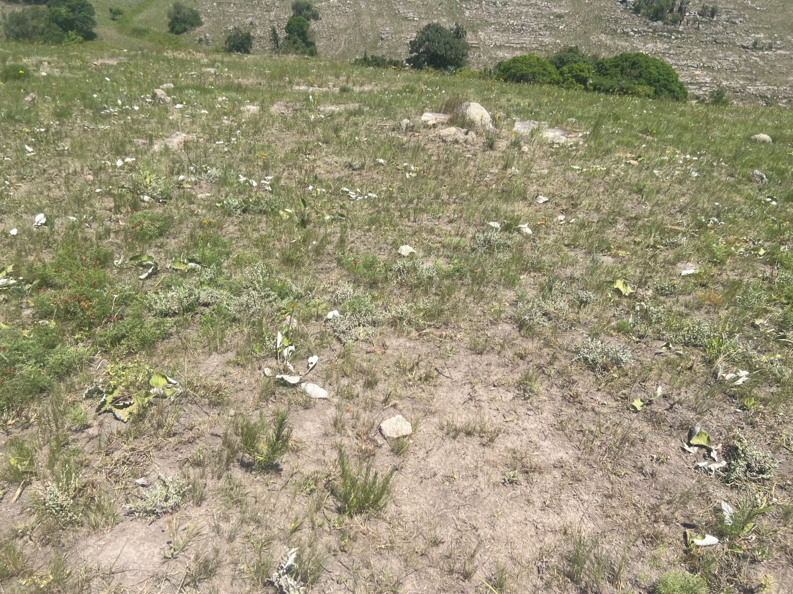
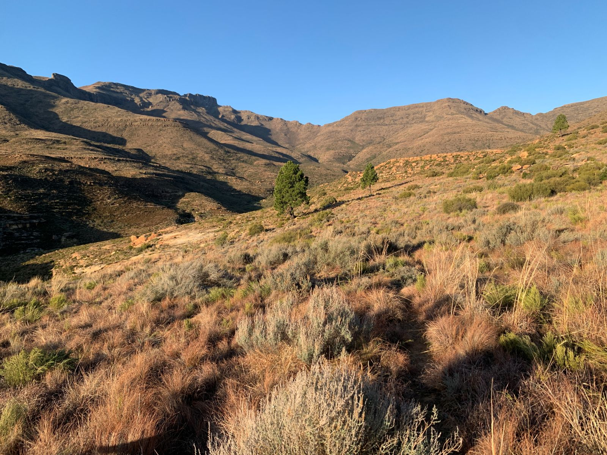
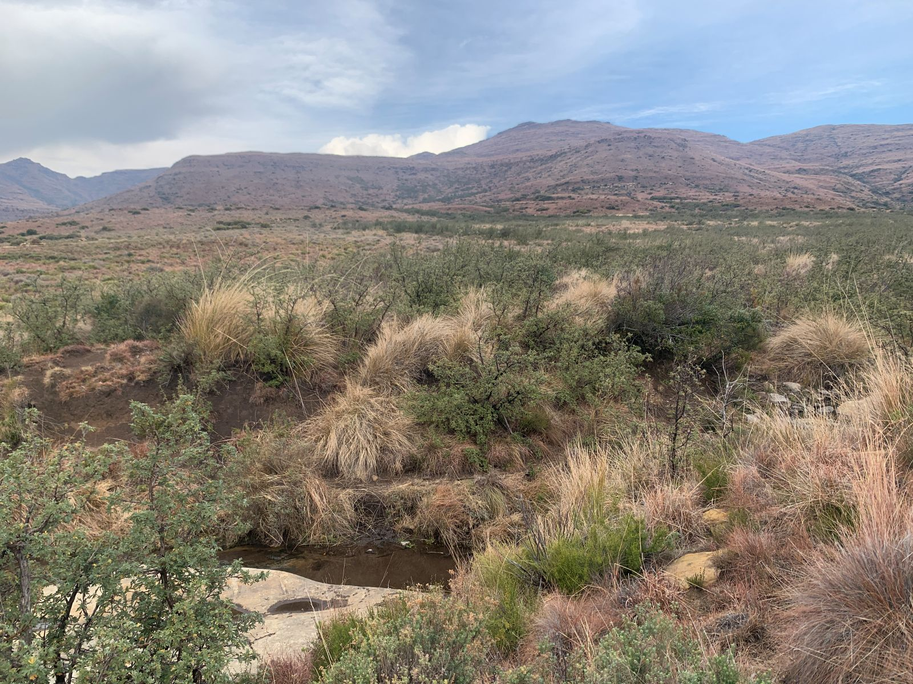
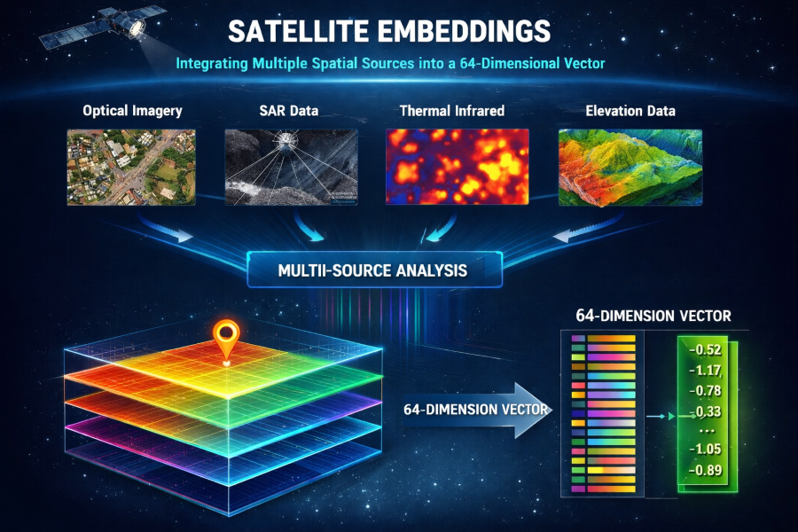

Grassland
The ecosystem condition assessments for this biome are still in progress. We thus provide the summary of the vegetation units, what data is currently available that may inform condition assessments or potential approaches.
Ecological Context
The Grassland biome is the second largest of the nine biomes, occupying c. 29% of the land surface1. Grasslands underpin human well-being by providing a range of ecosystem goods and services such as food, water, shelter, carbon storage, forage production, erosion control, and recreation. South Africa’s grasslands are fire-prone, grazing-adapted ecosystems where condition is tightly linked to the coupling (or uncoupling) of fire, herbivory, and rainfall variability.
Vegetation units
Using the broader grassland ecosystem groupings (bioregions), we structure analyses and interpretation around: Dry Highveld, Mesic Highveld, High-Altitude (Drakensberg), Sub-Escarpment, and Coastal Grasslands.
Dry Highveld Grassland
Typically open, treeless sweetveld on undulating plains, often with strong stands of Themeda triandra, with Digitaria eriantha), Dry Highveld Grasslands are more common in higher-rainfall parts and Anthephora on sandier/lower-rainfall sites.
Potential degradation indicators: loss of basal cover with a shift from palatable perennial grasses to patchy, short “grazing lawn” areas and bare soil, often with more karroid shrubs.
Mesic Highveld Grassland
Moist Highveld sourveld with high summer productivity that builds heavy fuel loads and supports frequent and intense fires. These ecosystems often have high forb and geophyte diversity and are closely linked to wetlands and headwater catchments across the eastern Highveld.
Potential degradation indicators: woody thickening and/or replacement of the tall, fuel-building grass layer by unpalatable grasses, reflecting altered fire–grazing balance.
High-Altitude Grassland
Predominantly high-altitude sourveld dominated by slow-growing, resprouting grasses, adapted to cold conditions, frequent severe frost, and high precipitation (rain, snow or mist), with a short growing season and strong water-source importance.
Potential degradation indicators: tussock breakdown into heavily grazed patches with increasing bare ground and erosion along paths and slopes.

Sub-Escarpment Grassland
Mesic, mid-altitude (760–1 800 m) grasslands at the base of the KwaZulu-Natal and Eastern Cape escarpment, generally more productive than montane areas and ideally forming an even grass sward (tussockiness can indicate poor condition), with natural forest or woodland patches confined to appropriate landscape positions (kloofs, drainage lines, slopes).
Potential degradation indicators: an increasingly tussocky, uneven sward with local bare patches, often linked to overgrazing and inappropriate fire regimes.

Coastal Grassland
A heterogeneous belt of grasslands embedded within the Indian Ocean Coastal Belt, ranging from subtropical grasslands on old sandy dunes or coastal flats (often linked to a shallow water table) to southern coastal grasslands on rocky plateaus and complex terrain (dunes, incised valleys, cliffs, ravines). These grasslands are maintained strongly by frequent fire under warm, wet coastal climates.
Potential degradation indicators: overgrazing that creates persistent bare patches and erosion on dunes or coastal slopes, often alongside invasive plants.

Key pressures
Most pressures in South Africa converge in the Grasslands. The dominant historical drivers of biodiversity loss are annual and perrenial crop production, plantation forestry, urban expansion and infrastructure, mining, and dams1, which fragment remaining primary grassland and remove or alter soils and hydrology. Changes due to these pressure are already monitored in the National Biodiversity Assessment by using the South African National Land Cover data sets, cross referenced to the ecosystem types of the National Vegetation Map to calculate the extent of each land cover class. The remaining areas are mostly used for livestock production and ranching, i.e. are working rangelands, where degradation is subtle, such as shifts in species composition, change in vegetation structure, basal cover, erosion risk, and woody thickening, often without a clear land-cover change signal.
- Woody encroachment: reduced grazeable grass layer and altered vegetation structure (an example of greening meaning “bad” in this context)

- Overuse of rangelands: declining basal cover, compositional shifts, patchiness, and increased erosion susceptibility (often climate-confounded)

- Invasive alien plants: competitive displacement and hydrological impacts

- Fire regime disruption: structural change, increased erosion risk, invasive establishment, and facilitation of woody thickening

Potential remote sensing approaches
Grassland condition (more commonly called “degradation”) is mapped in many ways, but generally the focus is on productivity for livestock production. Most remote-sensing monitoring of grassland integrity thus starts with vegetation productivity3, estimated through greenness, like NDVI or fractional vegetation cover (FVC) or canopy metrics, like a leaf area index as a proxy for “veld condition”, i.e. the ability of the vegetation to provide fodder for livestock or game. Long-term trends and anomalies in NDVI/EVI or net primary productivity can be used to flag areas with persistent declines (or atypical increases) relative to their surroundings4. To reduce climate confounding, a common pattern is to adjust productivity signals for rainfall and seasonality (e.g., residual-trend approaches such as RESTREND or related climate-normalisation methods) so that remaining trends are more indicative of human-driven degradation or recovery5. Beyond productivity, many workflows add complementary indicators of structure and ground cover (bare soil, woody cover signals, fire-regime metrics, and spatial heterogeneity) to better separate degradation mechanisms that can look similar in greenness alone. Since the utility of remote sensing to detect species composition is still in its infancy, few approaches are able to differentiate whether the herbaceous vegetation is intact or not. For instance, unpalatable grasses or invasive grasses or forbs may not be detected in FVC, and erroneously be classified as primary or productive grasslands.
1) Habitat loss and fragmentation (context layer, not the project’s pressure focus)
- What to map: Natural vs transformed extent; recent conversion hotspots; fragmentation (edge density, patch size, connectivity) within each bioregion.
- Approach: National or global land cover products for baseline masking and change detection between time steps; compute landscape metrics in moving windows (e.g. 1–5 km) stratified by bioregion.
- Already available: SANLC (and many global national land cover products).
2) Grazing pressure and overutilisation of rangelands (subtle degradation gradients)
- What to map: Persistent reductions in cover or productivity relative to climate; persistent increase in bare soil cover; increased patchiness; slow shifts in seasonal dynamics.
- Approach (time series):
- Landsat/Sentinel-2 vegetation index time series (NDVI/EVI) summarised as long-term median, 5th percentile, interannual CV, and trend.
- Fractional Vegetation Cover provides sub-pixel estimates of tree, shrub, herbaceous and bare soil, making it a core layer for grassland condition because it captures ground cover directly (often more interpretable than NDVI alone).
- Climate-adjusted productivity diagnostics (e.g. residual trend methods) using rainfall covariates to separate drought effects from degradation signals.
- Spatial heterogeneity metrics (texture of NDVI/EVI; local variance) to detect patchiness typical of overuse.
- Evaluate signals within rainfall zones and landforms; compare against reference sites (protected areas / least-impacted rangelands) to reduce confounding by natural gradients.
3) Fire regime disruption (too frequent, too infrequent, wrong season)
- What to map: Fire return interval; seasonality; fire deficit/excess relative to expected regime per bioregion.
- Approach:
- Burned-area products (MODIS/VIIRS) to derive fire frequency, time-since-fire, and season-of-burn metrics (see e.g.6).
- Combine with fuel proxies (multi-year biomass/NDVI) and rainfall to interpret whether changes reflect altered management vs climate variability.
- The goal is a fire regime layer per bioregion that flags areas likely outside typical bounds (e.g. long unburnt mesic grasslands, or overly frequent burns in erosion-prone settings).
- Already available: numerous fire management products are available, such as FIRMS.
4) Woody encroachment / woody thickening
- What to map: Increasing woody cover within historically open grassland; shifts toward more evergreen/woody phenology; structural change.
- Approach (multi-sensor):
- Long-term greening signals (EVI/NDVI trends) interpreted cautiously (greening can be recovery or encroachment).
- Seasonal/phenology separation (harmonic metrics or seasonal composites) to distinguish woody vs grassy timing and persistence.
- Radar backscatter metrics (Sentinel-1) or canopy-structure proxies where feasible to corroborate woody structural increase.
- Already available: National-scale vegetation trend products based on Landsat EVI7 can be used as an initial screen for areas of persistent greening potentially consistent with woody thickening.
5) Invasive alien plants (especially woody invasives and riparian invaders)
- What to map: Invasive species presence, density or extent in priority landscapes; spread fronts; post-clearing recovery trajectories.
- Approach:
- Supervised classification with Sentinel-2 or Landsat using spectral + phenology features; include terrain and distance-to-drainage predictors for riparian invasions.
- Object-based mapping (segmentation) in heterogeneous coastal or sub-escarpment landscapes where pixel mixing is strong.
- Change detection for management monitoring (pre-/post-clearing NDVI/cover recovery).
- Already available: the National Invasive Alien Plant Survey has mapped the cover of key invasive in South Africa8; woody invasive species have been mapped in four of South Africa’s key catchments, three of which occur in Grasslands.
- Practical note: Treat IAP mapping as a targeted layer (priority catchments/coastal belts) rather than attempting uniform national detection.
Implementation principles (applies across pressures)
- Stratify by grassland bioregion (and rainfall zone/landform where possible) and by environmental gradients within each bioregion to avoid conflating natural variation with degradation.
- Use a reference-based lens where feasible (protected areas / least-impacted sites) to interpret deviation in cover, phenology, and structure.
- Prefer multi-metric evidence (e.g. trend + heterogeneity + fire regime) over single indices, especially in climate-variable grasslands.
If field-validated training points are available that label grassland sites across a gradient of condition (e.g., intact → moderately degraded → severely degraded → transformed), a potential new approach we are testing is to model ecosystem condition directly using satellite embeddings. Embeddings compress thousands of satellite data layers into annualised 64 dimensions to capture complex spectral–spatial patterns beyond simple indices, and can be used as predictors in supervised spatial models (e.g., Random Forest or gradient boosting), or combined with climate/terrain covariates to reduce confounding by natural gradients. The fitted model can then be applied wall-to-wall to produce either class probabilities for each ecosystem condition state or a continuous condition score.
If training data for condition “states” are not available (e.g. if experts are not comfortable assigning condition to sites), embeddings could potentially also be used to map pressures, e.g. woody invasive might have unique embeddings signatures compared to native species. While we have not explored all the options, embeddings provide a way of efficiently utilising the unmanageable amount of satellite data.
